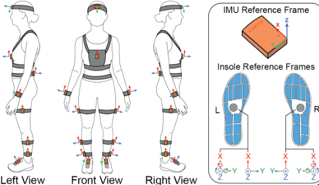

Biomedical · Wearables

Wearable-Based Quantification of Static Balance in Parkinson's Disease
- Can IMU devices provide a solution to collect valuable data to quantify the severity of Parkinson's disease?
- Development of signal processing pipeline for feature extraction and analysis
IMUSignal processingParkinson's diseasePostural controlSample entropy